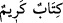

Abbâs (r.anhümâ)’nın rivâyetinde “İşte
“ (bana mühürlenmiş bir mektup bırakıldı)” âyeti de bunu
göstermektedir.” ziyâdesi de vardır. Bu rivâyet, Sehâvî’nin el-Mekasıdü’l-
hasene’sinde geçmektedir.
Enes (r.a.)’ın rivâyet ettiğine göre Hz. Peygamber (s.a.), Arap olmayanlara mektup
gönderirdi. Kendisine: “Onlar sadece üzerinde mühür olan mektubu kabul ederler.”
denildi. Bunun üzerine “ nakşedilmiş gümüşten bir mühür edindi ve bunu
sol elinin serçe parmağına taktı.[60]
“Mühürlü olmayan her mektup, mağlûbdur/başarısız olur.” denilmiştir.
Celâleyn Tefsîri’nde: “ muhtevası güzel demektir.” der. Nitekim Şeyhzâde de
muhtevası güzel demektir.” der. Nitekim Şeyhzâde de
Şuâra sûresinin başlarında: “ lafzından ve mânâlarından hoşnud olunan
demektir.” der.
Ya da “ şerefli demektir. Çünkü mektup besmele ile başlamaktadır. Nitekim
şerefli demektir. Çünkü mektup besmele ile başlamaktadır. Nitekim
bazıları der ki: “Mademki mektubun mazmunu Allah’ın ismi idi, o hâlde o mektup bütün
mektuplardan daha yüce, daha değerlidir.”
Ey Rabbim, senin adın her şeyin en iyi başlangıcıdır
Senin ismini anmadan eserime nasıl başlarım?
Senin adın bütün mektupları süslemektedir
Senin kelâmın bütün sînelere rahat ve huzur vermektedir
et-Te’vîlâtü’n-Necmiyye’de der ki: “İşâret etmektedir ki mektup Belkıs’ın hidâyetine
ve îmânına sebep olduğu için o, mektubu “kerîm” diye isimlendirdi. Çünkü o, mektubun
kerâmeti ile Kerîm’in huzuruna yol buldu. Bazıları da şöyle demiştir: “Belkıs mektuba
hürmet gösterdiği için hidâyet ile merzûk olup sonunda îmân etti. Tıpkı sihirbazların
Mûsâ (a.s.)’ı öne alıp “Ey Mûsâ, önce sen mi atarsın…” (el-A’râf, 7/115) diyerek
edebe riâyet etmeleri ve îman ile merzuk olmaları gibi. Kisrâ ise Rasûlullah (s.a.)’in
mektubunu parçalayınca Allah da onun mülkünü parçaladı, küfür ve inadının cezâsını
verdi.”
30. “Mektup Süleyman’dandır, Rahmân ve Rahîm olan Allah’ın adıyla
(başlamakta)dır.”
Sanki: “Bu mektup kimdendir ve muhtevâsı nedir?” diye sorulmuş, cevâben Belkıs
şöyle demiştir:
“Mektup Süleyman’dandır,” Mektubun muhtevâsı veya içinde yazılanlar şöyledir: